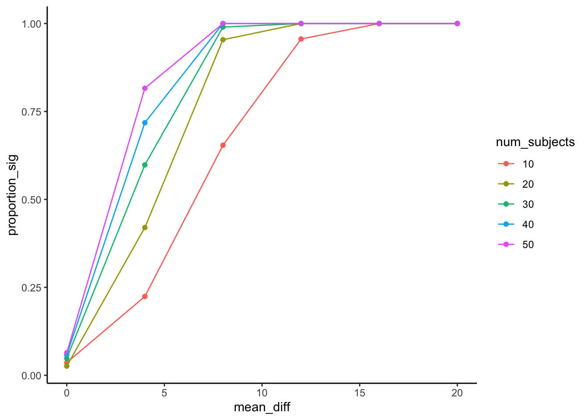

Chapter 11 Simulating Data
You may have noticed that throughout this book so far we have analyzed a lot of fake data. We used R to simulate pretend numbers, and then we analyzed those numbers. We also, from time to time, loaded in some “real” data, and analyzed that. In your labs each week, you have been analyzing a lot of real data. You might be thinking that the simulations we ran were just for educational purposes, to show you how things work. That’s partly true, that’s one reason we ran so many simulations. At the same time, conducting simulations to understand how data behaves is a legitimate branch of statistics. There are some problems out there where we don’t have really good analytic math formulas to tell us the correct answer, so we create and run simulations to approximate the answer.
I’m going to say something mildy controversial right now: If you can’t simulate your data, then you probably don’t really understand your data or how to analyze it. Perhaps, this is too bold of a statement. There are many researchers out there who have never simulated their data, and it might be too much too claim that they don’t really understand their data because they didn’t simulate. Perhaps. There are also many students who have taken statistics classes, and learned how to press some buttons, or copy some code, to analyze some real data; but, who never learned how to run simulations. Perhaps my statement applies more to those students, who I believe would benefit greatly from learning some simulation tricks.
11.1 Reasons to simulate
There are many good reasons to learn simulation techniques, here are some:
You force yourself to consider the details of your design, how many subjects, how many conditions, how many observations per condition per subject, and how you will store and represent the data to describe all of these details when you run the experiment
You force yourself to consider the kinds of numbers you will be collecting. Specifically, the distributional properties of those numbers. You will have to make decisions about the distributions that you sample from in your simulation, and thinking about this issue helps you better understand your own data when you get it.
You learn a bit of computer programming, and this is a very useful general skill that you can build upon to do many things.
You can make reasonable and informed assumptions about how your experiment might turn out, and then use the results of your simulation to choose parameters for your design (such as number of subjects, number of observations per condition and subject) that will improve the sensitivity of your design to detect the effects you are interested in measuring.
You can even run simulations on the data that you collect to learn more about how it behaves, and to do other kinds of advanced statistics that we don’t discuss in this book.
You get to improve your intuitions about how data behaves when you measure it. You can test your intuitions by running simulations, and you can learn things you didn’t know to begin with. Simulations can be highly informative.
When you simulate data in advance of collecting real data, you can work out exactly what kinds of tests you are planning to perform, and you will have already written your analysis code, so it will be ready and waiting for you as soon as you collect the data
OK, so that’s just a few reasons why simulations are useful.
11.2 Simulation overview
The basic idea here is actually pretty simple. You make some assumptions about how many subjects will be in your design (set N), you make some assumptions about the distributions that you will be sampling your scores from, then you use R to fabricate fake data according to the parameters you set. Once you build some simulated data, you can conduct a statistical analysis that you would be planning to run on the real data. Then you can see what happens. More importantly, you can repeat the above process many times. This is similar to conducting a replication of your experiment to see if you find the same thing, only you make the computer replicate your simulation 1000s of times. This way you can see how your simulated experiment would turn out over the long run. For example, you might find that the experiment you are planning to run will only produce a “signficant” result 25% of the time, that’s not very good. Your simulation might also tell you that if you increase your N by say 25, that could really help, and your new experiment with N=25 might succeed 90% of the time. That’s information worth knowing.
Before we go into more simulation details, let’s just run a quick one. We’ll do an independent samples \(t\)-test. Imagine we have a study with N=10 in each group. There are two groups. We are measuring heart rate. Let’s say we know that heart rate is on average 100 beats per minute with a standard deviation of 7. We are going to measure heart rate in condition A where nothing happens, and we are going to measure heart rate in condition B while they watch a scary movie. We think the scary movie might increase heart rate by 5 beats per minute. Let’s run a simulation of this:
##
## Two Sample t-test
##
## data: group_A and group_B
## t = -1.4273, df = 18, p-value = 0.1706
## alternative hypothesis: true difference in means is not equal to 0
## 95 percent confidence interval:
## -7.330529 1.399618
## sample estimates:
## mean of x mean of y
## 100.2433 103.2087We sampled 10 scores from a normal distribution for each group. We changed the mean for group_b to 105, because we were thinking their heart rate would be 5 more than group A. We ran one \(t\)-test, and we got a result. This result tells us what happens for this one simulation.
We could learn more by repeating the simulation 1000 times, saving the \(p\)-values from each replication, and then finding out how many of our 1000 simulated experiments give us a significant result:
save_ps<-length(1000)
for(i in 1:1000){
group_A <- rnorm(10,100,7)
group_B <- rnorm(10,105, 7)
t_results <- t.test(group_A,group_B,var.equal = TRUE)
save_ps[i] <- t_results$p.value
}
prop_p<-length(save_ps[save_ps<0.05])/1000
print(prop_p)## [1] 0.345Now this is more interesting. We found that 34.5% of simulated experiments had a \(p\)-value less than 0.05. That’s not very good. If you were going to collect data in this kind of experiment, and you made the correct assumptions about the mean and standard deviation of the distribution, and you made the correct assumption about the size of difference between the groups, you would be planning to run an experiment that would not work-out most of the time.
What happens if we increase the number of subject to 50 in each group?
save_ps<-length(1000)
for(i in 1:1000){
group_A <- rnorm(50,100,7)
group_B <- rnorm(50,105, 7)
t_results <- t.test(group_A,group_B,var.equal = TRUE)
save_ps[i] <- t_results$p.value
}
prop_p<-length(save_ps[save_ps<0.05])/1000
print(prop_p)## [1] 0.949Ooh, look, almost all of the experiments are significant now. So, it would be better to use 50 subjects per group than 10 per group according to this simulation.
Of course, you might already be wondering so many different kinds of things. How can we plausibly know the parameters for the distribution we are sampling from? Isn’t this all just guess work? We’ll discuss some of these issues as we move forward in this chapter.
11.3 Simulating t-tests
We’ve already seen some code for simulating a \(t\)-test 1000 times, saving the \(p\)-values, and then calculating the proportion of simulations that are significant (p<0.05). It looked like this:
save_ps<-length(1000)
for(i in 1:1000){
group_A <- rnorm(50,100,7)
group_B <- rnorm(50,105, 7)
t_results <- t.test(group_A,group_B,var.equal = TRUE)
save_ps[i] <- t_results$p.value
}
prop_p<-length(save_ps[save_ps<0.05])/1000
print(prop_p)## [1] 0.951You could play around with that, and it would be very useful I think. Is there anything else that we can do that would be more useful? Sure there is. With the above simulation, you have to change N or the mean difference each time to see how proportion of significant experiments turns out. It would be nice to look at a graph where we could vary the number of subjects, and the size of the mean difference. That’s what the next simulation does. This kind of simulation can make your computer do some hard work depening on how many simulations you run. To make my computer do less work, we will only run 100 simulations for each parameter. But, what we will do is vary the number of subjects from 10 to 50 (steps of 10), and vary the size of the effect from 0 to 20 in steps of 4.
num_sims <-500
N <-c(10,20,30,40,50)
mean_difference <-c(0,4,8,12,16,20)
save_ps<-length(num_sims)
all_df<-data.frame()
for(diff in mean_difference){
for (j in N){
for(i in 1:num_sims){
group_A <- rnorm(j,100,7)
group_B <- rnorm(j,100+diff, 7)
t_results <- t.test(group_A,group_B,var.equal = TRUE)
save_ps[i] <- t_results$p.value
}
sim_df <-data.frame(save_ps,
num_subjects=as.factor(rep(j,num_sims)),
mean_diff =rep(diff,num_sims))
all_df <- rbind(all_df,sim_df)
}
}
plot_df <- all_df %>%
dplyr::group_by(num_subjects,mean_diff) %>%
dplyr::summarise(proportion_sig = length(save_ps[save_ps<0.05])/num_sims)
ggplot(plot_df, aes(x=mean_diff,
y=proportion_sig,
group=num_subjects,
color=num_subjects))+
geom_point()+
geom_line()+
theme_classic()
A graph like this is very helpful to look at. Generally, before we run an experiment, we might not have a very good idea of the size of the effect that our manipulation might cause. Will it be a mean difference of 0 (no effect), or 5, or 10, or 20? If you are doing something new, you just might not have a good idea about this. You would know in general that bigger effects are easier to detect. You would be able to detect smaller and smaller effects if you ran more and more subjects. When you run this kind of simulation, you can vary the possible mean differences and the number of the subjects at the same time, and then see what happens.
When the mean diference is 0, we should get an average of 5%, or (0.05 proportion) experiments being significant. This is what we expect by chance, and it doesn’t matter how many subjects we run. When there is no difference, we will reject the null 5% of the time (these would all be type 1 errors).
How about when there is a difference of 4? This a pretty small effect. If we only run 10 subjects in each group, we can see that less than 25% of simulated experiments would show significant results. If we wanted a higher chance of success to measure an effect of this size, then we should go up to 40-50 subjects, that would get us around 75% success rates. If that’s not good enough for you (25% failures remember, that’s still alot), then re-run the simulation with even more subjects.
Another thing worth pointing out is that if the mean difference is bigger than about 12.5, you can see that all of the designs produce significant outcomes nearly 100% of the time. If you knew this, perhaps you would simply run 10-20 subjects in your experiment, rather than 50. After all, 10-20 is just fine for detecting the effect, and 50 subjects might be a waste of resources (both yours and your participants).
11.4 Simulating one-factor ANOVAs
The following builds simulated data for a one-factor ANOVA, appropriate for a between subjects design. We build the data frame containg a column for the group factor levels, and a column for the DV. Then, we run the ANOVA an print it out.
N <- 10
groups <- rep(c("A","B","C"), each=10)
DV <- c(rnorm(100,10,15), # means for group A
rnorm(100,10,15), # means for group B
rnorm(100,20,15) # means for group C
)
sim_df<-data.frame(groups,DV)
aov_results <- summary(aov(DV~groups, sim_df))
library(xtable)
knitr::kable(xtable(aov_results))| Df | Sum Sq | Mean Sq | F value | Pr(>F) | |
|---|---|---|---|---|---|
| groups | 2 | 1187.127 | 593.5635 | 2.683555 | 0.0699765 |
| Residuals | 297 | 65692.093 | 221.1855 | NA | NA |
In this next example, we simulate the same design 100 times, save the \(p\)-values, and the determine the proportion of significant simulations.
N <- 10
save_p<-length(100)
for(i in 1:100){
groups <- rep(c("A","B","C"), each=10)
DV <- c(rnorm(100,10,15), # means for group A
rnorm(100,10,15), # means for group B
rnorm(100,20,15) # means for group C
)
sim_df<-data.frame(groups,DV)
aov_results <- summary(aov(DV~groups, sim_df))
save_p[i]<-aov_results[[1]]$`Pr(>F)`[1]
}
length(save_p[save_p<0.05])/100## [1] 0.0711.5 Other resources
OK, It’s a tuesday, the summer is almost over. I’ve spent most of this summer (2018) writing this textbook, because we are using it this Fall 2018. Because I am running out of time, I need to finish this and make sure everything is in place for the course to work. As a result, I am not going to finish this chapter right now. The nice thing about this book, is that I (and other people) can fill things in over time. We have shown a few examples of data-simulation, so that’s at least something.
If you want to see more examples, I suggest you check out this chapter:
This section will get longer as I find more resources to add, and hopefully the entire chapter will get longer as I add in more examples over time.